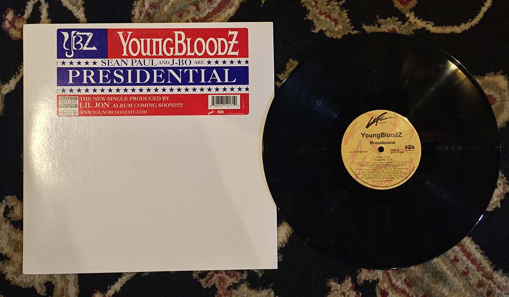
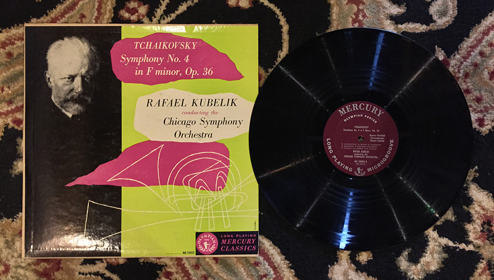

I got this bright white, American looking 12" during Tower Record's going-out-of-business fire sale. This unapologetically crunk single was produced by none other than Lil Jon himself back in 2005 on LaFace Records, the same Atlanta-based label that facilitated the music of Outkast and Goodie Mob in the '90s.
While this song will probably never be inducted into the Library of Congress, there's something absolutely beautiful and infectious about a good, repetitive southern rap hook coupled with a swarming beat. Lil Jon turns his keyboard into an Imperial Star Destroyer, spitting out laser-like salvos of synth, blazing the way for J-Bo (who?!) and Sean Paul to deliver their thick and heavy chant-rap. When the beat drops it sounds like there’s a swarm of angry bees coming at you. I think is the best crunk song ever, however, history says otherwise. 'Presidential' never did too well on the charts and was never as popular as other Lil Jon-anthems like 'Salt Shaker' and 'Snap Yo Fingaz.' Oh, the mid 2000s. What a time.
Still, this record has a special place in my heart. It was one of the very first pieces of vinyl I ever bought. The second track on the record itself is the instrumental, so you can get down to this trunk-rattler sans lyrics.
Verdict: Keep. Definitely keep.

Have you ever seen the movie Doctor Zhivago? I wouldn’t be surprised if David Lean listened to this record while making that movie because this album basically that film in stereophonic form; it’s too long, it’s too dramatic, and way before it’s even over you’re wondering why you should care about it or its characters anymore. But the whole time, there’s this nagging feeling that tells you that it’s important for some obtuse reason you really can’t grasp so you keep on watching, or in this case, listening.
I ran cross-country in high school. Listening to this kind of music is sort of like running a cross-country race. You know it’s going to suck and it sucks while you’re doing it and the best part is when it’s finally over and you go puke your guts out in front of the girls team.
Whether it’s literature, art, or music, the classics hold an inarguable position of importance. They might not be as fun or as easy to digest as the contemporary, but learning about them is essential to having a well-rounded understanding of those forms. Even though listening to this piece in particular is a huge chore, I’m just not getting rid of a Tchaikovsky album.
Verdict: Keep, because getting rid of it would feel sacrilegious.
Keeping:
-Presidential by Yungbloodz
-Tchaikovsky, Symphony No. 4 in F minor, Op. 36 conducted by Rafael Kubelik and performed by the Chicago Symphony Orchestra
Getting Rid Of:
-The “My Fair Lady” Soundtrack
-Smokey and His Friends: Keep America Beautiful
-Just A Song… by the Norman Luboff Choir
-D’Indy, Suite in Olden Style for Trumpet, Two Flutes and Strings, Op. 24 performed by Pressler, Glantz, Baker, Monteux, Sklar and the Guilet String Quartet